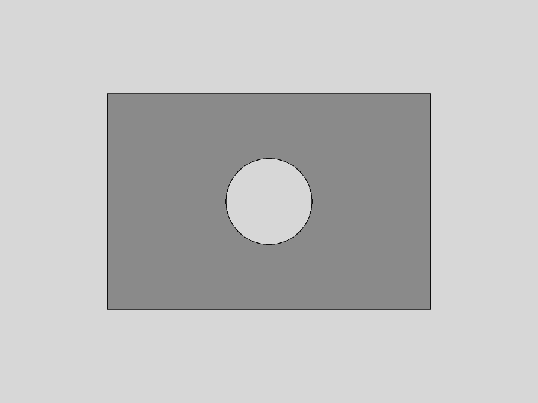
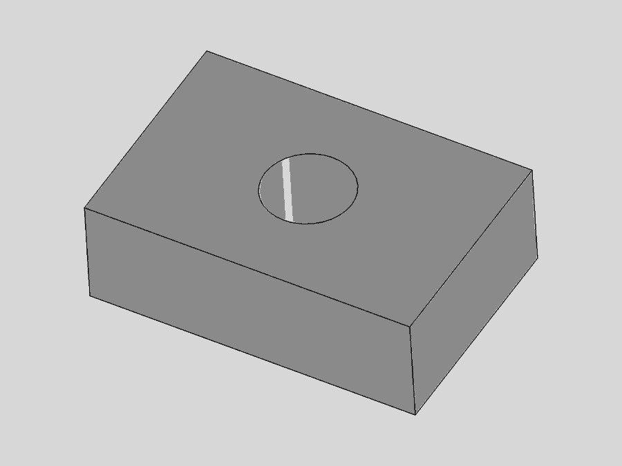

W/03 — SUPERVISED VALIDATION PIPELINE
감독형 검증 파이프라인
만드는 에이전트와 검사하는 에이전트를 구조적으로 분리하고, 그 분리가 실제로 결함을 잡아내는지 끝까지 돌려본 기록.
01 — 무엇을 물었나
연구 산출물을 만든 쪽이 스스로 검사하면, 통과는 증거가 아니라 의견이 됩니다. 만드는 권한과 검사하는 권한을 물리적으로 갈라놓으면 그 문제가 사라지는지 — 그리고 갈라놓은 검사가 실제로 무언가를 잡아내는지 — 확인하려 했습니다.
02 — 근거
- INF
감독자에게 FreeCAD MCP를 붙이지 않는다
도구가 없으면 감독자가 워커의 일을 몰래 대신하고 자기 결과를 검증하는 경로가 구조적으로 막힙니다. 규칙이 아니라 능력의 부재로 보장합니다.
- INF
모든 치수는 INFERRED이며 물리적 주장을 하지 않는다
이 프로젝트는 인프라 시험입니다. 해석적으로 검산 가능하도록 고른 값이고, 실제 대상을 기술하지 않습니다.
- SRC
값 하나하나가 증거 등급을 달고 저장된다
AGENTS.md §2 — SOURCE_FACT / CALCULATED / INFERRED / ILLUSTRATIVE
03 — 어떻게 했나
- 01
명세 먼저
CAD보다 specifications/geometry_spec.json이 앞섭니다. 형상은 승인된 명세에서 잘라냅니다.
- 02
워커 디스패치
Orca 오케스트레이션 아래 Run → Task → Dispatch로 내보내고, 완료는 worker_done 한 번으로만 보고받습니다.
- 03
결정적 게이트
validate_artifacts.py가 증거 등급, 단위, 치환, 명세↔CAD 대조를 기계로 검사합니다.
- 04
감독자 재측정
워커 보고를 읽기 전에 저장된 모델을 감독자가 직접 열어 다시 잽니다.
- 05
델타 정정
결함이 나오면 전체를 다시 만들지 않고 틀린 것만 지정해 고칩니다.
04 — 수치
| 값 | 크기 | 등급 | 출처 · 식 · 근거 |
|---|---|---|---|
| plate_length | 30.000mm | INF | 해석적으로 검산 가능하도록 고른 시험용 치수 |
| plate_width | 20.000mm | INF | 같음 |
| plate_thickness | 10.000mm | INF | 같음 |
| hole_diameter | 8.000mm | INF | 같음 |
| solid_volume | 5497.345175mm³ | CALC | V = L·W·T − π(D/2)²·T, L=30 W=20 T=10 D=8 |
05 — 형상


- PlateBlank.Length ← Parameters.plate_length
- PlateBlank.Width ← Parameters.plate_width
- PlateBlank.Height ← Parameters.plate_thickness
- HoleCutter.Radius ← Parameters.hole_diameter / 2
- HoleCutter.Height ← Parameters.plate_thickness + 2
FCStd 안 Document.xml에서 직접 읽은 표현식 바인딩. 하드코딩된 치수 없음.
허용오차 0.01 mm
06 — 검증
PASS
| 검사 | 결과 | 방법 |
|---|---|---|
| 결정적 게이트 | PASS | validate_artifacts.py — 20개 검사 |
| 저장된 모델 재측정 | delta 0.0 mm³ | 감독자가 FCStd를 XML-RPC로 다시 열어 재계산. 부피 5497.345175426, 기대값과 차이 0.0, 허용 0.01 |
| 형상 무결성 | solids 1 · isValid · isClosed | 재측정 시 함께 확인 |
| 파라메트릭 여부 | PASS | Document.xml의 표현식 바인딩 5개 확인 |
| 렌더 ↔ 형상 대조 | PASS | 감독자가 PNG를 디코딩해 실루엣 경계상자를 직접 측정 |
| 델타가 모델을 보존했는가 | PASS | sha256 비교 — 정정이 결함 렌더 2장만 건드림 |
07 — 발견된 결함
렌더 세 장이 전부 등각 투상이었습니다. front.png와 top.png는 파일명이 주장하는 시점이 아니었습니다.
08 — 아직 모르는 것
- 게이트는 렌더가 PNG인지는 보지만, 파일명이 주장하는 시점을 실제로 보여주는지는 보지 못합니다. 시점 정합은 여전히 사람이 봐야 합니다.
- Orca worker-start로는 이 워커를 감독할 수 없습니다. 정지 판정 창(약 6초)이 로컬 27B 모델의 첫 토큰까지 걸리는 시간보다 짧아, 실제로 일하는 중에 디스패치가 실패로 표시되고 권한이 회수됩니다.
- 이 기계에서 qwen3.8-27b의 처리량은 6.68 tok/s입니다. 큰 파일 하나를 통째로 쓰면 스트림이 먼저 끊깁니다. 하드웨어·모델 크기의 한계이지 설정 문제가 아닙니다.
09 — 산출물
specifications/geometry_spec.json증거와 CAD 사이의 계약models/freecad/smoketest.FCStdsha256 185ca724…1139aamodels/freecad/smoketest.stepISO-10303-21, Open CASCADE 7.8validation/cad/smoketest.json빌드된 모델에서 읽어낸 측정값validation/final/smoketest.json전체 PASS/FAIL 보고reports/smoketest-report.html143 KB, 자체 완결. 재빌드 시 바이트 동일